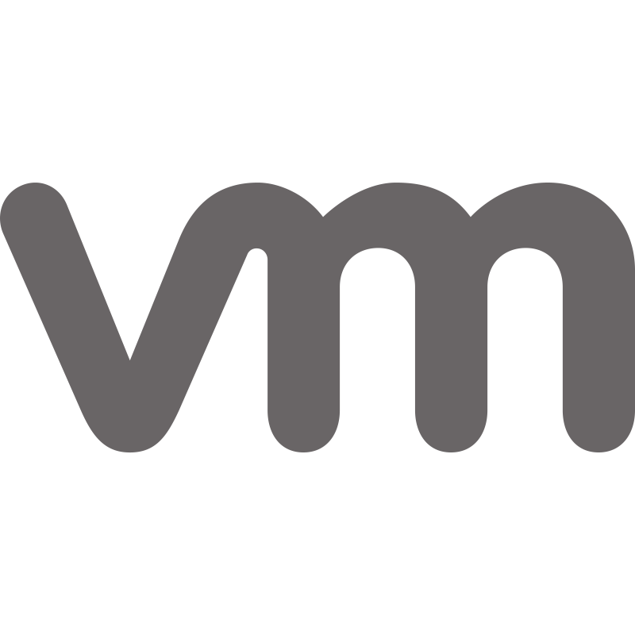
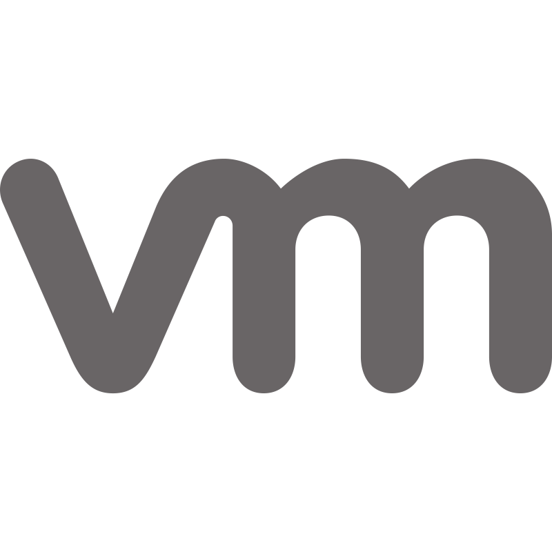

Inicio
¡Bienvenido a mi portfolio! Mi nombre es José Andrade. Este sitio fue creado para mostrar mis proyectos, conocimientos y experiencia profesional en el desarrollo de software y soluciones tecnológicas.
A lo largo de mi formación y experiencia, he trabajado en distintos entornos de programación y tecnologías que me han permitido construir soluciones funcionales, escalables y bien diseñadas.
Te invito a explorar mis proyectos y a contactarme si deseas colaborar o tienes alguna consulta.
Sobre mi
Soy alto programador
Actualmente soy estudiante avanzado de la carrera de Analista en Sistemas con pasión por la programación y las ciencias de la computación. Me considero una persona proactiva, con buena capacidad de aprendizaje y una fuerte orientación a la resolución de problemas.
Poseo diversos conocimientos sobre Bases de datos, lenguajes de programacion, compiladores, redes, sistemas operativos, etc.
Algunas de las tecnologías y herramientas que manejo incluyen:


 


Proyectos
Aleph
Aleph es un lenguaje de programación interpretado, diseñado específicamente para la manipulación de listas y conjuntos. Implementado en C usando Flex y Bison, su núcleo está basado en árboles de sintaxis abstracta (AST) y un sistema de tipos dinámico.
Straming Replication
Implementación de un entorno de replicación en streaming de PostgreSQL utilizando contenedores Docker. El proyecto configura un nodo principal y un nodo réplica que mantienen la sincronización en tiempo real, asegurando alta disponibilidad y tolerancia a fallos. Se utilizaron volúmenes persistentes, redes Docker personalizadas y configuración detallada de archivos como postgresql.conf y pg_hba.conf para establecer la replicación de forma segura y automatizada.
Método de la Esquina Noroeste
Implementación en Java del método de la esquina noroeste para obtener una solución inicial al problema de transporte. Se utilizaron matrices para representar los costos, oferta y demanda, y listas enlazadas para manejar las asignaciones de forma dinámica. El proyecto modela eficientemente problemas logísticos con restricciones.
Cluster con Maquinas Virtuales
Configuración de un clúster de computadoras utilizando máquinas virtuales con Debian, orientado a la distribución de tareas. El proyecto incluyó la instalación y configuración de servicios de red, sincronización entre nodos, y pruebas de conectividad y rendimiento. Fue una práctica integral para entender la arquitectura de sistemas distribuidos y la administración de entornos virtualizados.